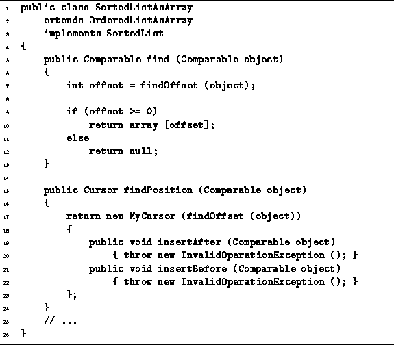

Data Structures and Algorithms
with Object-Oriented Design Patterns in Java
Data Structures and Algorithms
with Object-Oriented Design Patterns in Java
Program  defines the two methods
used to locate items in a sorted list.
Both of these methods make use of the findOffset method
described above.
defines the two methods
used to locate items in a sorted list.
Both of these methods make use of the findOffset method
described above.

Program: SortedListAsArray class find and findPosition methods.
The find method takes a given object
and finds the object contained in the sorted list which matches
(i.e., compares equal to) the given one.
It calls findOffset to determine by doing a binary search
the array index at which the matching object is found.
find returns a reference to the matching object, if one is found;
otherwise, it returns null.
The total running time of find is dominated by findOffset.
Therefore, the running time is  .
.
The findPosition method also takes an object, but it returns a Cursor instead. findPosition determines the position in the array of an object which matches its second argument.
The implementation of findPosition is trivial:
It calls findOffset to determine
the position at which the matching object is found
and returns an instance of an anonymous class
derived from the MyCursor class.
(The MyCursor class is defined
in Program ).
The anonymous class derived from MyCursor overrides
the inherited insertAfter and insertBefore methods
with methods that throw an InvalidOperationException.
These insert operations are not provided for sorted lists
because they allow arbitrary insertion,
but arbitrary insertions do not necessarily result in sorted lists.
The total running time of the findPosition method
is dominated by findOffset.
Therefore like find,
the running time of findPosition is  .
.
 Copyright © 1998 by Bruno R. Preiss, P.Eng. All rights reserved.
Copyright © 1998 by Bruno R. Preiss, P.Eng. All rights reserved.